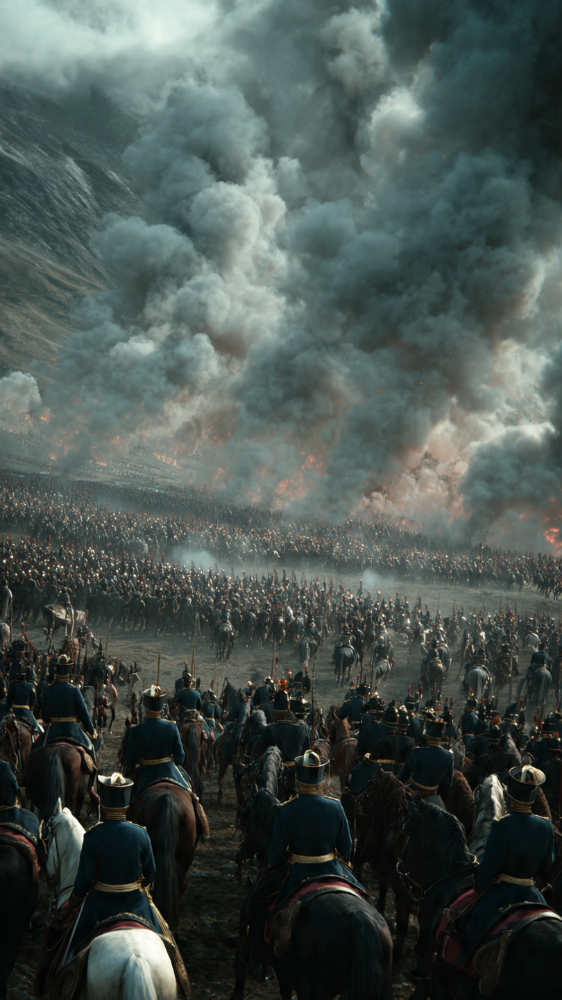

```html id="g8c1fz"
كيف غيّرت رسالة واحدة مصير العالم؟ | قصص تاريخية
```
في بعض الأحيان، لا تحتاج الأحداث الكبرى إلى جيوش ضخمة أو معارك طويلة.
فقد تكون رسالة واحدة كافية لتغيير مجرى التاريخ.
ومن أشهر الأمثلة على ذلك برقية قصيرة أُرسلت في القرن التاسع عشر، لكنها ساهمت في إشعال حرب غيّرت خريطة أوروبا.
وعُرفت هذه الرسالة باسم برقية إمس (Ems Dispatch).
في عام 1870، كانت العلاقات بين فرنسا وبروسيا متوترة.
وكان المستشار البروسي الشهير أوتو فون بسمارك يسعى إلى توحيد الولايات الألمانية في دولة واحدة.
لكن هذا المشروع كان يواجه عقبات سياسية، وكانت فرنسا تنظر بقلق إلى تزايد قوة بروسيا.
ولهذا أصبحت أي أزمة دبلوماسية قابلة للتحول إلى صراع كبير.
في تلك الفترة، التقى ملك بروسيا فيلهلم الأول بالسفير الفرنسي في مدينة إمس.
وكان اللقاء هادئًا وانتهى دون مشكلات كبيرة.
وبعده، أرسل الملك تقريرًا يشرح ما حدث إلى بسمارك.
لكن عندما وصلت الرسالة إلى المستشار، قرر تعديل صياغتها قبل نشرها للصحافة.
اختصر بعض العبارات وجعل النص يبدو أكثر حدة، دون أن يغيّر الوقائع الأساسية.
وعندما نُشرت البرقية، شعر كثير من الفرنسيين بأن بلادهم تعرضت للإهانة.
وفي المقابل، رأى الرأي العام في بروسيا أن فرنسا تتصرف بطريقة متعجرفة.
وخلال أيام قليلة، تصاعد التوتر السياسي بسرعة.
لكن...
كيف تحولت برقية قصيرة إلى شرارة أشعلت حربًا كاملة؟
هذا ما سنعرفه في الجزء الثاني.
📷 الصورة رقم 1
بعد نشر برقية إمس في الصحف، انتشرت بسرعة في بروسيا وفرنسا.
وكانت صياغتها المختصرة والحادة كافية لإثارة الرأي العام في البلدين.
ففي فرنسا، اعتبر كثيرون أن السفير الفرنسي تعرض للإهانة، وأن كرامة بلادهم أُسيء إليها.
أما في بروسيا، فقد رأى الناس أن ملكهم تصرف بحزم في مواجهة الضغوط الفرنسية.
وهكذا تحولت أزمة دبلوماسية محدودة إلى مواجهة سياسية خطيرة.
وفي التاسع عشر من يوليو عام 1870، أعلنت فرنسا الحرب على بروسيا.
لكن الأحداث لم تسر كما توقعت القيادة الفرنسية.
فقد كانت بروسيا قد استعدت جيدًا، كما انضمت إليها عدة ولايات ألمانية.
وخلال أشهر قليلة، حققت القوات البروسية انتصارات متتالية، وانتهت الحرب بهزيمة فرنسا وأسر الإمبراطور نابليون الثالث.
وكانت تلك الهزيمة من أكبر التحولات السياسية في أوروبا خلال القرن التاسع عشر.
وبعد انتهاء الحرب، أُعلنت الإمبراطورية الألمانية رسميًا عام 1871 داخل قصر فرساي في فرنسا.
وبذلك تحقق الهدف الذي سعى إليه أوتو فون بسمارك، وهو توحيد معظم الولايات الألمانية في دولة واحدة قوية.
كما اضطرت فرنسا إلى توقيع معاهدة سلام والتنازل عن إقليمي الألزاس واللورين، وهو ما ترك آثارًا سياسية استمرت لعقود.
ولهذا يرى كثير من المؤرخين أن برقية إمس كانت واحدة من أكثر الرسائل تأثيرًا في التاريخ الحديث.
فلم تكن وحدها سبب الحرب، لكنها لعبت دورًا مهمًا في زيادة التوتر ودفع الأحداث نحو المواجهة العسكرية.
لكن...
لماذا ما زالت برقية إمس تُدرَّس حتى اليوم؟
وما الدرس الذي تعلمه العالم من هذه الحادثة؟
هذا ما سنعرفه في الجزء الثالث والأخير.
📷 الصورة رقم 2

بعد أكثر من 150 عامًا، لا تزال برقية إمس تُعد واحدة من أشهر الأمثلة على تأثير الكلمات في السياسة الدولية.
فقد أثبتت أن طريقة عرض المعلومات قد تكون مؤثرة بقدر المعلومات نفسها.
ولم تكن البرقية وحدها سبب اندلاع الحرب الفرنسية البروسية، لكنها ساهمت في زيادة التوتر بين الطرفين في وقت كانت العلاقات فيه متأزمة بالفعل.
ولهذا يراها المؤرخون مثالًا على قوة الدبلوماسية والإعلام في تشكيل مجرى الأحداث.
كما غيّرت نتائج تلك الحرب خريطة أوروبا.
فقد أدى انتصار بروسيا إلى قيام الإمبراطورية الألمانية الموحدة عام 1871، لتصبح واحدة من أقوى الدول الأوروبية.
وفي المقابل، تركت خسارة فرنسا شعورًا بالمرارة بسبب فقدان إقليمي الألزاس واللورين، وهو ما ظل يؤثر في العلاقات بين البلدين لعقود طويلة.
ويرى بعض الباحثين أن هذه التوترات كانت من العوامل التي ساهمت في تشكيل المشهد الأوروبي قبل الحرب العالمية الأولى.
وتُدرَّس قصة برقية إمس اليوم في التاريخ والعلوم السياسية، لأنها تبرز كيف يمكن للصياغة والاتصال السياسي أن يؤثرا في قرارات الدول.
كما تؤكد أهمية التحقق من المعلومات، وفهم سياقها الكامل، وعدم الاكتفاء بالعناوين أو العبارات المختصرة عند تقييم الأحداث الكبرى.
إن قصة برقية إمس تذكرنا بأن رسالة قصيرة قد تغيّر مجرى التاريخ عندما تأتي في اللحظة المناسبة.
فالكلمات قد تبني السلام، وقد تزيد من حدة الأزمات إذا استُخدمت بطريقة خاطئة.
ولهذا بقيت هذه البرقية واحدة من أكثر الرسائل تأثيرًا في التاريخ الحديث، ودليلًا على أن قوة الكلمة قد تضاهي أحيانًا قوة الجيوش.
📜🌍 انتهت القصة 🌍📜